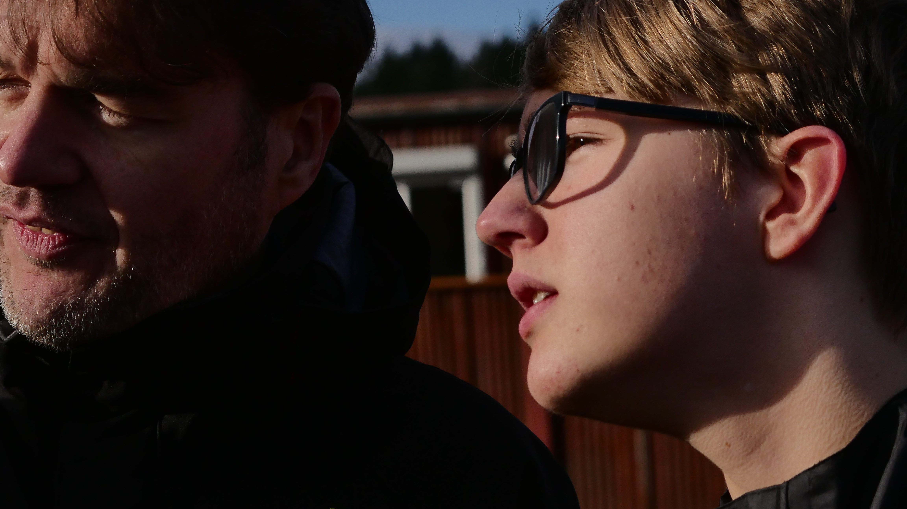
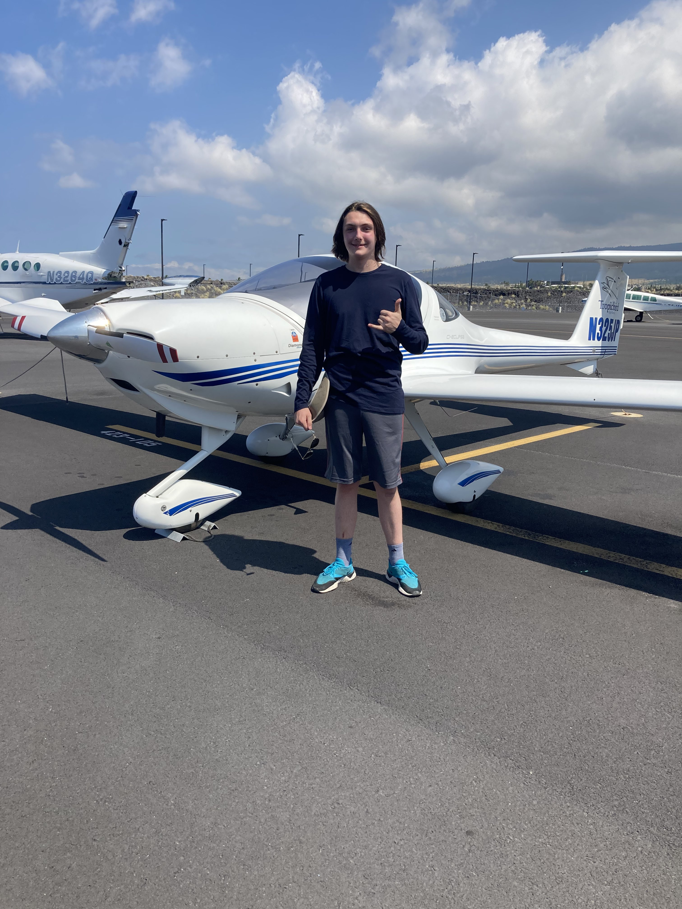
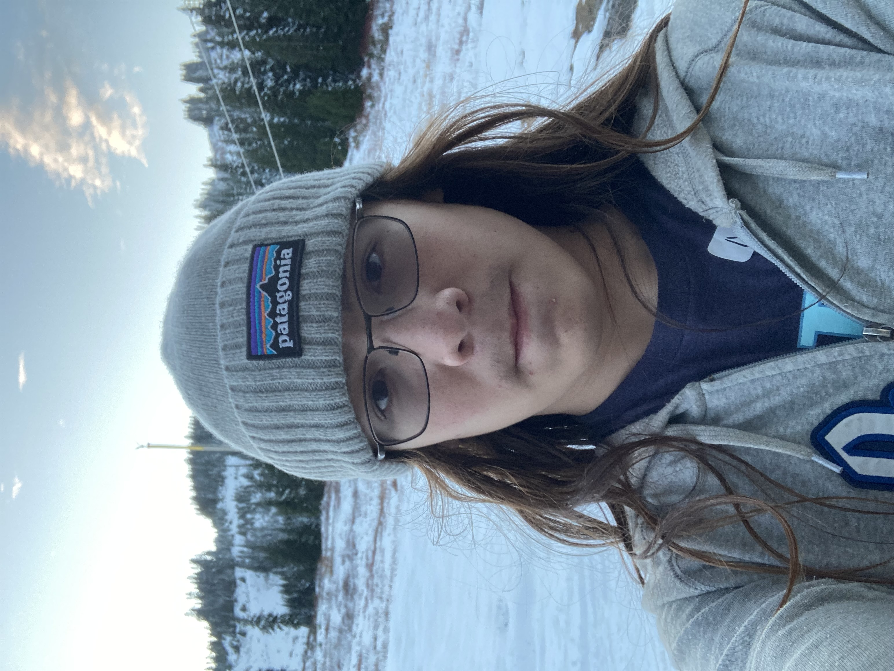

Adrien Dumont
I was born July 2007 in Champigny-Sûr-Marne, France. I have loved Cars for as long as I can remember and was born in a Family that loved Cars, being introduced to them Early on in my life. I started Sim-racing online at the age of 9 on Assetto Corsa and Gran Turismo, and drove my first car at the age of 11. I started racing physically December 26th 2020 in the Pacific GP League Series in the Pro-Am Category. I now race in the Pacific GP Pro League Series with 425 Motorsports, and am the leading Junior Driver in the Series.

Damian Lopez
My racing career started way before I got behind the wheel in the summer of 2019. It started when I was three, when I first watched cars, and from what I heard i was truly captivated by the cars themselves and from there on I lost myself in the family tradition of cars. Fast forward to when I started racing karts was because, the final push ended up being drive to survive on Netflix, which is a show about the background of formula 1. That summer I went out to pgp to do the junior driver test and I passed and after about a year of practice I went to pro-am in my first season Finished 4th in the championship and the following one I won the championship by ten points after a season long battle with the runner up and now I am driving in the pro category and hope to make my mark in 206 series in karting with this new team Scuderia Pacifica. there you go

Brogan McNamara
Hi, I'm Brogan and I was born in 2007. Machines and engines of all types have been an integral part of my childhood for as long as I can remember. I was born in Seattle, and typically can be found at a workbench or at the airport working on one of my dad's planes

Nathan Holden
I was born January 2007 in Seattle, Washington, USA. I've loved working on cars for a long time. I was introduced to working on cars by my father when I was young on a 80 Series Toyota Land cruiser. When I was 13 I started playing Beamng Drive, Forza Horizon 4, and Car Mechanic Simulator.
